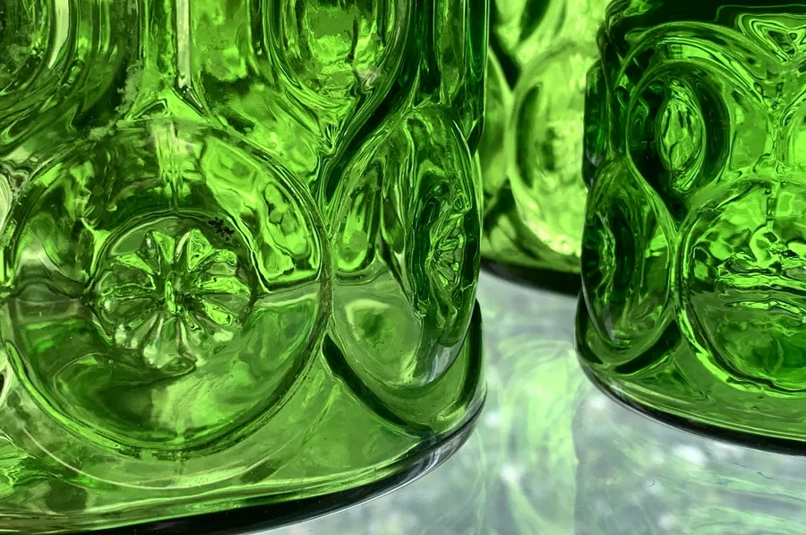

9 components, 6 tokens, 3 snippets
Components
9
Carafe
Photo · Product
Switch
Control · 4 states

Vase
Photo · Product
- 64
Slider
Control · Continuous

Glassware
Photo · Set of 2
- DayWeekMonth
Segmented
Control · 3 options

Calla
Photo · Still life
- Emailhi@forma.co
Text field
Input · 5 states
Container
Photo · Product
Tokens
6Neutrals
Colour · 5 steps
- Aa
Display
Type · 600, −0.022em
Radius
Shape · 6, 12, 16 px
Raised
Shadow · 2 layers
Spacing
Scale · 4 pt grid
Spring
Motion · 0.3 s
Code
3:root {
--ink: #1d1d1f;
--fill: #f5f5f7;
--radius-card: 20px;
}export function Switch({ on, onChange }) {
return <button role="switch" aria-checked={on}
className="switch" onClick={() => onChange(!on)} />;
}{ "spring": { "response": 0.3, "damping": 1 },
"press": { "scale": 0.97, "ms": 100 } }